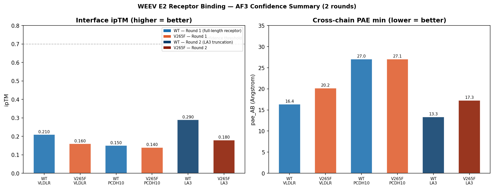
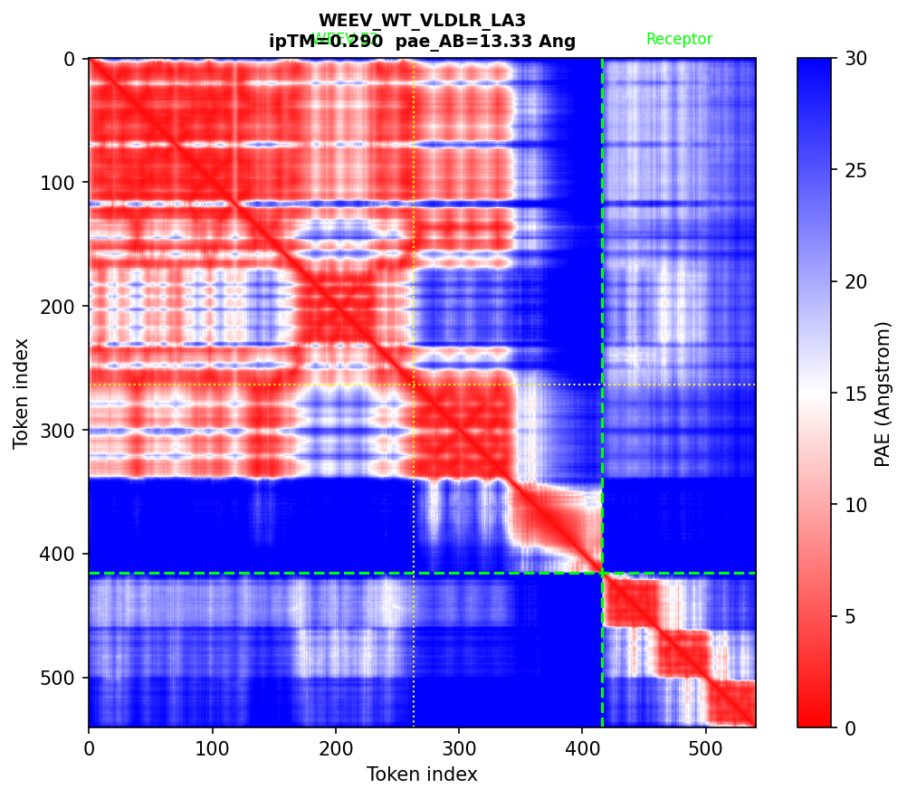

2025年发表于 Cell Reports 的研究（Byrd et al.）报道了一个引人注目的发现： 西方马脑炎病毒（WEEV）E2 糖蛋白第265位的单点突变 V265F 足以改变病毒的受体向性—— 野生型（WT）利用 PCDH10 作为入胞受体，而 V265F 突变体则改用 VLDLR（低密度脂蛋白受体相关蛋白）。 这一"单点氨基酸切换受体"的现象意味着265位在结合界面上具有核心地位。
VLDLR 含有8个 LA（ligand-binding）重复结构域，文献已明确 LA3（UniProt P98155, pos 106–145） 是甲病毒结合的核心区域，关键残基为 P129 / W132 / D135 / E137 / D139。 PDB 中已有 WEEV E2 WT 的晶体结构（PDB 9L1N），但尚无 E2-VLDLR 复合物结构。 这正是 AF3 预测可以发挥作用的空间。
本次分析分两轮提交，每轮解决不同问题：
| 序列 | 来源 | 长度 |
|---|---|---|
| WEEV E2 WT | PDB 9L1N Chain B（71V株） | 416 aa |
| WEEV E2 V265F | 同上，pos265 V→F 人工突变 | 416 aa |
| VLDLR 全长 | UniProt P98155 | 873 aa |
| PCDH10 胞外域 | UniProt Q9Y5H8, pos 25–710 | 686 aa |
| VLDLR LA2–LA4 | UniProt P98155, pos 66–190 | 125 aa |
WT 与 V265F 的唯一序列差异（pos 265，0-indexed=264）：
# WT
...LTPTVCPVP...
# V265F
...LTPTFCPVP...
04_prepare_af3_inputs.py，节选）import requests
# 从 UniProt 获取 VLDLR LA2-LA4 截短版（pos 66-190）
resp = requests.get("https://rest.uniprot.org/uniprotkb/P98155.fasta")
vldlr_full = "".join(resp.text.split("\n")[1:])
vldlr_la3 = vldlr_full[65:190] # 0-indexed，覆盖 LA2+LA3+LA4
# 验证关键结合残基全部在截取范围内
binding_residues = {129: 'P', 132: 'W', 135: 'D', 137: 'E', 139: 'D'}
for pos, aa in binding_residues.items():
local_idx = pos - 66 # 转换为截短版索引
assert vldlr_la3[local_idx] == aa, f"pos {pos} mismatch"
# V265F 突变
weev_v265f = weev_wt[:264] + "F" + weev_wt[265:]
05_analyze_af3.py，核心逻辑）def load_best_model(job_dir):
"""读取5个候选模型，按 ranking_score 选最优"""
summary_files = [f for f in os.listdir(job_dir)
if "summary_confidences" in f]
best_score = -1
for sf in summary_files:
s = json.load(open(f"{job_dir}/{sf}"))
if s.get("ranking_score", 0) > best_score:
best_score = s["ranking_score"]
best_summary = s
return best_summary
# 关键指标提取
iptm = summary["iptm"] # 整体界面置信度
pae_AB = summary["chain_pair_pae_min"][0][1] # E2→受体最小PAE（Å）
| Job | 轮次 | 最优模型 | ipTM | pae_AB (Å) | 备注 |
|---|---|---|---|---|---|
| WEEV_WT_VLDLR | R1 | model_0 | 0.210 | 16.35 | 全长基线 |
| WEEV_V265F_VLDLR | R1 | model_0 | 0.160 | 20.18 | |
| WEEV_WT_PCDH10 | R1 | model_0 | 0.150 | 27.04 | 无模板 |
| WEEV_V265F_PCDH10 | R1 | model_0 | 0.140 | 27.07 | |
| WEEV_WT_VLDLR_LA3 | R2 | model_0 | 0.290 | 13.33 | 📌 最优 |
| WEEV_V265F_VLDLR_LA3 | R2 | model_0 | 0.180 | 17.29 |
ipTM 判读标准：>0.7 = 高置信；0.5–0.7 = 中等；<0.5 = 低置信（当前全部处于低置信区间）。


将 VLDLR 从873aa截至125aa后，WT 的界面 ipTM 从0.210升至0.290，pae_AB 从16.35降至13.33 Å。 这验证了"信号稀释"假说——全长VLDLR的8个LA重复使 AF3 无法聚焦真实结合区。 然而，0.290 仍远低于 AF3 置信阈值（0.7），整体预测可信度有限。
WT 和 V265F 对 PCDH10 的 ipTM 均约为0.14–0.15，无鉴别力。 原因是 PDB 中没有任何甲病毒 E2–PCDH10 复合物结构，AF3 缺乏模板，预测纯靠序列推断。 这一结果与 PCDH10 作为"新发现受体"的现实一致，不代表 E2-PCDH10 无结合。
本次探索建立了迄今 WEEV E2 + VLDLR LA3 的最高质量 AF3 预测（ipTM=0.290）， 并通过两轮迭代设计（全长→截短）系统性地测试了输入序列长度对预测质量的影响。 核心收获：
| 方向 | 工具 | 预期价值 |
|---|---|---|
| 引入 RosettaDock 重新打分 | Rosetta 3 | 绕过 AF3 模板偏差，直接优化界面能量 |
| MD 模拟验证预测构象稳定性 | GROMACS / OpenMM | 动态层面验证 AF3 静态预测 |
| cryo-EM 实验结构验证 | 实验室设备 | 与计算预测交叉验证，校准偏差 |
| SFV / EEEV 同源 E2 的同类分析 | AF3 Server | 检验方法在其他甲病毒中的一致性 |
02_定制层/
├── scripts/
│ ├── 04_prepare_af3_inputs.py # 序列准备与验证
│ └── 05_analyze_af3.py # JSON解析、PAE热图、接触概率、综合对比
├── data/
│ └── af3_results/ # 6个job，每个含5个模型（.cif + .json）
│ ├── WEEV_WT_VLDLR/
│ ├── WEEV_V265F_VLDLR/
│ ├── WEEV_WT_PCDH10/
│ ├── WEEV_V265F_PCDH10/
│ ├── WEEV_WT_VLDLR_LA3/ # 第二轮
│ └── WEEV_V265F_VLDLR_LA3/ # 第二轮
└── figures/
├── af3_summary_all.png # ⭐ 套磁信附件
├── pae_WEEV_WT_VLDLR_LA3.png # ⭐ 套磁信附件
├── highlight_combined.png # 两图合并版
└── ...（其余8张备用）